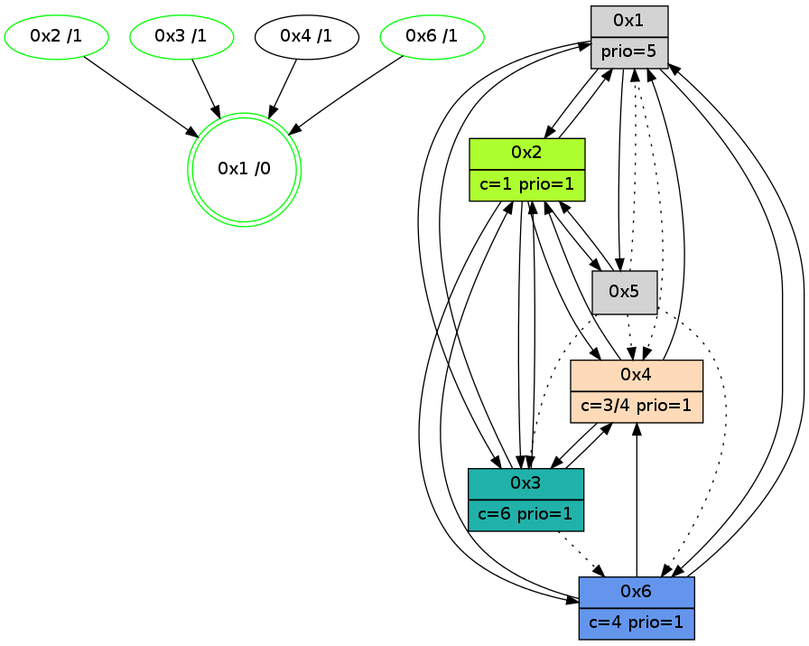

>> << IDX [start] -100 -25 -5 +0 +5 +25 +100 [840.178285122]
 Previous packets
----------------------------------------------------------------------
835.257204 beacon01(adaf) #0 coord=01,02,05,03,04,06 cycle=432.0ms assoc
-- color-indic=1 64 51 d2
835.267164 beacon02(adaf) #0 coord=01,02,05,03,04,06 cycle=432.0ms assoc 64 00 2d
835.277165 beacon05(adaf) #0 coord=01,02,05,03,04,06 cycle=432.0ms assoc 64 a6 07
835.287164 beacon03(adaf) #0 coord=01,02,05,03,04,06 cycle=432.0ms assoc 64 3a 23
835.297165 beacon04(adaf) #0 coord=01,02,05,03,04,06 cycle=432.0ms assoc 64 9c 09
835.307165 beacon06(adaf) #0 coord=01,02,05,03,04,06 cycle=432.0ms assoc 64 e8 15
835.319606 [Color(6) seq=65 @0:0 color=4 prio=1 c=0,1,2,5;3]
835.321503 [Hello(2): seq=1128 sym=6,4,1,3 sysInfo=hasWarning,coloring-mode-on,ColoringModeIndicationCalled stat=6:9,5,13,4/4:15,2,8,2/1:1,7,14,1/3:14,4,9,1]
835.324636 [Color(2) seq=64 @0:0 color=1 prio=1 c=0,2,3,4,5]
----------------------------------------------------------------------
835.749312 beacon01(adaf) #0 coord=01,02,05,03,04,06 cycle=432.0ms assoc
-- color-indic=1 64 1d 62
835.759273 beacon02(adaf) #0 coord=01,02,05,03,04,06 cycle=432.0ms assoc 64 4c 9d
835.769273 beacon05(adaf) #0 coord=01,02,05,03,04,06 cycle=432.0ms assoc 64 ea b7
835.779272 beacon03(adaf) #0 coord=01,02,05,03,04,06 cycle=432.0ms assoc 64 76 93
835.789273 beacon04(adaf) #0 coord=01,02,05,03,04,06 cycle=432.0ms assoc 64 d0 b9
835.799275 beacon06(adaf) #0 coord=01,02,05,03,04,06 cycle=432.0ms assoc 64 a4 a5
835.814512 [Hello(1): seq=539 sym=2,3,4,6 sysInfo=hasWarning,coloring-mode-on,ColoringModeRequestCalled stat=2:12,0,2,1/3:3,2,4,1/4:2,4,11,2/6:5,11,12,1]
835.817575 [Hello(4): seq=640 sym=2,3 sysInfo=hasWarning,coloring-mode-on,ColoringModeIndicationCalled stat=2:14,5,8,2/3:8,8,9,3]
835.820474 [Color(4) seq=66 @0:0 color=3/4 prio=1 c=0,1,4,5;2]
835.822059 [STC(1) #0.80 new-neigh,tree-change,inconsistent-stability,stable,to-color d=0]
835.824963 [Color(1) seq=66 @0:0 color=5 prio=3 >1.@3 c=1,3,4;0,2]
----------------------------------------------------------------------
836.241419 beacon01(adaf) #0 coord=01,02,05,03,04,06 cycle=432.0ms assoc
-- color-indic=1 64 d9 0d
836.251378 beacon02(adaf) #0 coord=01,02,05,03,04,06 cycle=432.0ms assoc 64 88 f2
836.261380 beacon05(adaf) #0 coord=01,02,05,03,04,06 cycle=432.0ms assoc 64 2e d8
836.271379 beacon03(adaf) #0 coord=01,02,05,03,04,06 cycle=432.0ms assoc 64 b2 fc
836.281380 beacon04(adaf) #0 coord=01,02,05,03,04,06 cycle=432.0ms assoc 64 14 d6
836.291380 beacon06(adaf) #0 coord=01,02,05,03,04,06 cycle=432.0ms assoc 64 60 ca
836.303096 [Hello(5): seq=597 asym=2,1,6,3,4 sysInfo=hasWarning,coloring-mode-on,ColoringModeIndicationCalled stat=2:11,0,3,0/1:1,12,3,1/6:5,10,12,1/3:2,11,9,5/4:2,3,7,2]
836.308505 [Color(3) seq=36 @0:0 color=6/7 prio=1 c=1,3,4,5;0,2]
836.310779 [STC(2)->1 #0.80 new-neigh,tree-change,inconsistent-stability,stable,to-color d=1]
836.313392 [Color(2) seq=65 @0:0 color=1 prio=1 c=0,2,3,4,5]
836.315268 [Color(6) seq=66 @0:0 color=4/5 prio=1 c=0,1,2,5,6;3]
----------------------------------------------------------------------
836.733526 beacon01(adaf) #0 coord=01,02,05,03,04,06 cycle=432.0ms assoc
-- color-indic=1 64 01 49
836.743486 beacon02(adaf) #0 coord=01,02,05,03,04,06 cycle=432.0ms assoc 64 50 b6
836.753487 beacon05(adaf) #0 coord=01,02,05,03,04,06 cycle=432.0ms assoc 64 f6 9c
836.763488 beacon03(adaf) #0 coord=01,02,05,03,04,06 cycle=432.0ms assoc 64 6a b8
836.773488 beacon04(adaf) #0 coord=01,02,05,03,04,06 cycle=432.0ms assoc 64 cc 92
836.783488 beacon06(adaf) #0 coord=01,02,05,03,04,06 cycle=432.0ms assoc 64 b8 8e
836.795066 [TreeStatus(2)-.->1 #0.80 new-neigh,tree-change,inconsistent-stability,stable child=1]
836.796702 [Hello(1): seq=540 sym=2,3,4,6 sysInfo=hasWarning,coloring-mode-on,ColoringModeRequestCalled stat=2:13,1,3,1/3:3,2,4,1/4:2,4,11,2/6:6,12,12,2]
836.798852 [Hello(6): seq=554 sym=4,1,2 sysInfo=hasWarning,coloring-mode-on,ColoringModeIndicationCalled stat=4:3,0,7,2/1:3,4,1,1/2:12,6,11,5]
836.800657 [Hello(3): seq=639 sym=2,4,1 asym=6 sysInfo=hasWarning stat=2:9,5,8,2/4:8,0,5,2/1:12,14,13,1/6:8,0,4,11]
836.802864 [Color(1) seq=67 @0:0 color=5 prio=3 >1.@3 c=1,3,4;0,2,6]
836.804421 [Hello(4): seq=641 sym=2,3 sysInfo=hasWarning stat=2:14,6,9,2/3:8,9,10,3]
836.806990 [STC(4)->3-.->1 #0.80 to-color d=2]
----------------------------------------------------------------------
837.225635 beacon01(adaf) #0 coord=01,02,05,03,04,06 cycle=432.0ms assoc
-- color-indic=1 64 c5 26
837.245595 beacon05(adaf) #0 coord=01,02,05,03,04,06 cycle=432.0ms assoc 64 32 f3
837.275596 beacon06(adaf) #0 coord=01,02,05,03,04,06 cycle=432.0ms assoc 64 7c e1
837.287938 [Color(3) seq=37 @0:0 color=6/7 prio=1 c=1,3,4,5;0,2]
837.291748 [Color(6) seq=67 @0:0 color=4/5 prio=1 c=0,1,2,5,6;3]
----------------------------------------------------------------------
837.717742 beacon01(adaf) #0 coord=01,02,05,03,04,06 cycle=432.0ms assoc
-- color-indic=1 64 89 96
837.727704 beacon02(adaf) #0 coord=01,02,05,03,04,06 cycle=432.0ms assoc 64 d8 69
837.737704 beacon05(adaf) #0 coord=01,02,05,03,04,06 cycle=432.0ms assoc 64 7e 43
837.747704 beacon03(adaf) #0 coord=01,02,05,03,04,06 cycle=432.0ms assoc 64 e2 67
837.757705 beacon04(adaf) #0 coord=01,02,05,03,04,06 cycle=432.0ms assoc 64 44 4d
837.767704 beacon06(adaf) #0 coord=01,02,05,03,04,06 cycle=432.0ms assoc 64 30 51
837.779363 [Hello(4): seq=642 sym=2,3 sysInfo=hasWarning stat=2:14,6,9,2/3:8,9,10,3]
837.781433 [Hello(1): seq=541 sym=2,3,4,6 sysInfo=hasWarning,coloring-mode-on,ColoringModeRequestCalled stat=2:13,1,3,2/3:3,2,4,1/4:3,4,12,2/6:6,13,12,2]
837.784549 [Color(1) seq=68 @0:0 prio=5 c=4;0,1,2,5,6]
837.787153 [Hello(2): seq=1130 sym=6,4,1,3,5 sysInfo=hasWarning,coloring-mode-on,ColoringModeIndicationCalled stat=6:11,7,13,4/4:1,3,9,2/1:3,9,15,1/3:15,4,9,1/5:0,0,0,0]
837.790422 [Color(2) seq=66 @0:0 color=1 prio=1 c=0,2,3,4,5;6]
837.794404 [Hello(3): seq=640 sym=2,4,1 asym=6 sysInfo=hasWarning stat=2:9,5,8,2/4:9,0,6,2/1:12,15,13,1/6:8,1,4,11]
----------------------------------------------------------------------
838.209851 beacon01(adaf) #0 coord=01,02,05,03,04,06 cycle=432.0ms assoc
-- color-indic=1 64 4d f9
838.219812 beacon02(adaf) #0 coord=01,02,05,03,04,06 cycle=432.0ms assoc 64 1c 06
838.229813 beacon05(adaf) #0 coord=01,02,05,03,04,06 cycle=432.0ms assoc 64 ba 2c
838.239812 beacon03(adaf) #0 coord=01,02,05,03,04,06 cycle=432.0ms assoc 64 26 08
838.249812 beacon04(adaf) #0 coord=01,02,05,03,04,06 cycle=432.0ms assoc 64 80 22
838.259812 beacon06(adaf) #0 coord=01,02,05,03,04,06 cycle=432.0ms assoc 64 f4 3e
838.271153 [STC(1) #0.81 new-neigh,tree-change,inconsistent-stability,stable,to-color d=0]
838.273236 [Color(3) seq=38 @0:0 color=6/7 prio=1 c=1,3,4,5;0,2]
838.275183 [Hello(5): seq=599 sym=2 asym=1,6,3,4 sysInfo=hasWarning,coloring-mode-on,ColoringModeIndicationCalled stat=2:13,2,4,1/1:3,14,3,1/6:6,12,12,2/3:3,11,9,5/4:4,3,8,2]
----------------------------------------------------------------------
838.701959 beacon01(adaf) #0 coord=01,02,05,03,04,06 cycle=432.0ms assoc
-- color-indic=1 64 00 fe
838.711921 beacon02(adaf) #0 coord=01,02,05,03,04,06 cycle=432.0ms assoc 64 51 01
838.721920 beacon05(adaf) #0 coord=01,02,05,03,04,06 cycle=432.0ms assoc 64 f7 2b
838.731920 beacon03(adaf) #0 coord=01,02,05,03,04,06 cycle=432.0ms assoc 64 6b 0f
838.741921 beacon04(adaf) #0 coord=01,02,05,03,04,06 cycle=432.0ms assoc 64 cd 25
838.751920 beacon06(adaf) #0 coord=01,02,05,03,04,06 cycle=432.0ms assoc 64 b9 39
838.763816 [Hello(4): seq=643 sym=2,1,3 sysInfo=hasWarning stat=2:15,7,9,2/1:0,1,1,0/3:9,10,10,3]
838.766081 [Hello(1): seq=542 sym=2,3,6,5 asym=4 sysInfo=hasWarning,coloring-mode-on,ColoringModeRequestCalled stat=2:14,2,3,2/3:3,2,4,1/6:7,14,12,2/5:0,0,0,0/4:4,4,12,2]
838.768547 [STC(4)->1 #0.81 to-color d=1]
838.770013 [Hello(2): seq=1131 sym=6,4,1,3,5 sysInfo=hasWarning,coloring-mode-on,ColoringModeIndicationCalled stat=6:12,8,13,4/4:2,3,9,2/1:3,9,0,1/3:15,4,9,1/5:1,0,0,0]
838.773003 [Hello(3): seq=641 sym=2,4,1 asym=6 sysInfo=hasWarning stat=2:9,5,8,2/4:9,0,6,2/1:12,15,14,1/6:8,1,4,11]
838.775773 [STC(6)->1 #0.81 new-neigh,tree-change,inconsistent-stability,stable,to-color d=1]
838.777581 [STC(2)->1 #0.81 new-neigh,tree-change,inconsistent-stability,stable,to-color d=1]
838.779222 [STC(3)->1 #0.81 new-neigh,tree-change,inconsistent-stability,stable,to-color d=1]
838.781471 [Color(1) seq=69 @0:0 prio=5 c=1,4;0,2,3,5,6]
838.783190 [Color(2) seq=67 @0:0 color=1 prio=1 c=0,2,3,4,5;6]
----------------------------------------------------------------------
839.194067 beacon01(adaf) #0 coord=01,02,05,03,04,06 cycle=432.0ms assoc
-- color-indic=1 64 c4 91
839.204027 beacon02(adaf) #0 coord=01,02,05,03,04,06 cycle=432.0ms assoc 64 95 6e
839.214028 beacon05(adaf) #0 coord=01,02,05,03,04,06 cycle=432.0ms assoc 64 33 44
839.224029 beacon03(adaf) #0 coord=01,02,05,03,04,06 cycle=432.0ms assoc 64 af 60
839.234027 beacon04(adaf) #0 coord=01,02,05,03,04,06 cycle=432.0ms assoc 64 09 4a
839.244028 beacon06(adaf) #0 coord=01,02,05,03,04,06 cycle=432.0ms assoc 64 7d 56
839.256546 [Color(6) seq=69 @0:0 color=4 prio=1 c=0,1,2,5,6;3]
839.260332 [Color(3) seq=39 @0:0 color=6 prio=1 c=1,3,4,5;0,2]
----------------------------------------------------------------------
839.686175 beacon01(adaf) #0 coord=01,02,05,03,04,06 cycle=432.0ms assoc
-- color-indic=1 64 88 21
839.696137 beacon02(adaf) #0 coord=01,02,05,03,04,06 cycle=432.0ms assoc 64 d9 de
839.706138 beacon05(adaf) #0 coord=01,02,05,03,04,06 cycle=432.0ms assoc 64 7f f4
839.716136 beacon03(adaf) #0 coord=01,02,05,03,04,06 cycle=432.0ms assoc 64 e3 d0
839.726138 beacon04(adaf) #0 coord=01,02,05,03,04,06 cycle=432.0ms assoc 64 45 fa
839.736137 beacon06(adaf) #0 coord=01,02,05,03,04,06 cycle=432.0ms assoc 64 31 e6
839.747820 [Hello(4): seq=644 sym=2,1,3 sysInfo=hasWarning stat=2:0,8,10,2/1:0,2,1,0/3:10,10,11,3]
839.750030 [Hello(1): seq=543 sym=2,3,6,5 asym=4 sysInfo=hasWarning,coloring-mode-on,ColoringModeRequestCalled stat=2:14,3,3,2/3:3,2,4,1/6:7,14,12,2/5:0,0,0,0/4:4,4,12,2]
839.752733 [Color(1) seq=70 @0:0 prio=5 c=1,4;0,2,3,5,6]
839.755734 [Hello(2): seq=1132 sym=6,4,1,3,5 sysInfo=hasWarning,coloring-mode-on,ColoringModeIndicationCalled stat=6:12,8,13,4/4:3,3,9,2/1:3,9,0,1/3:15,4,9,1/5:1,0,0,0]
839.759011 [Color(2) seq=68 @0:0 color=1 prio=1 c=0,2,3,4,5;6]
839.762861 [Hello(3): seq=642 sym=2,4,1 asym=6 sysInfo=hasWarning stat=2:9,6,8,2/4:9,0,6,2/1:12,0,14,1/6:8,1,4,11]